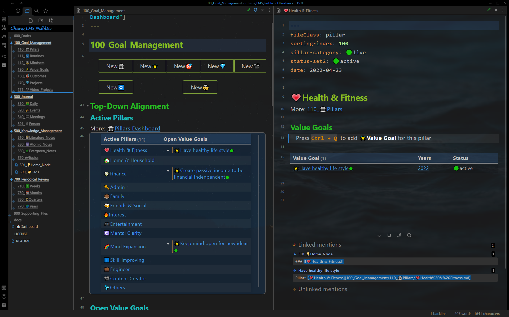
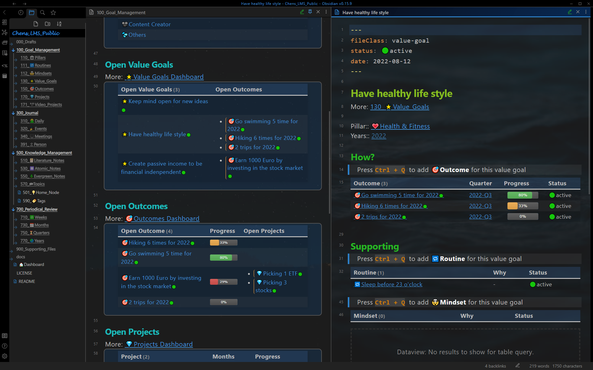
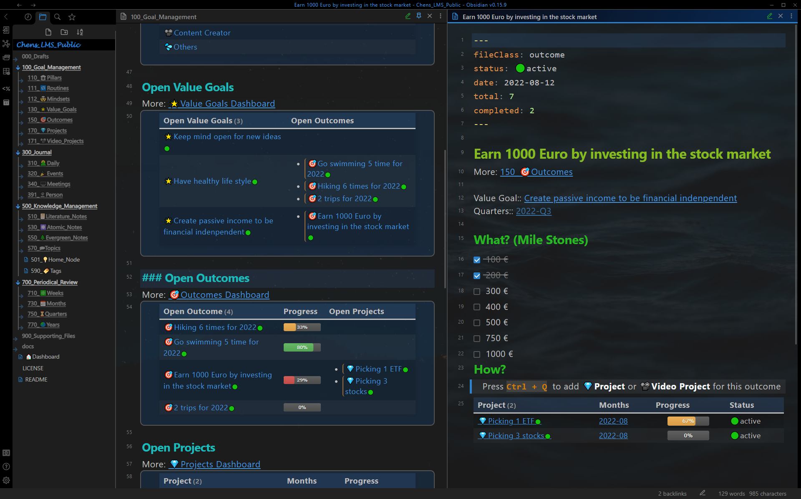
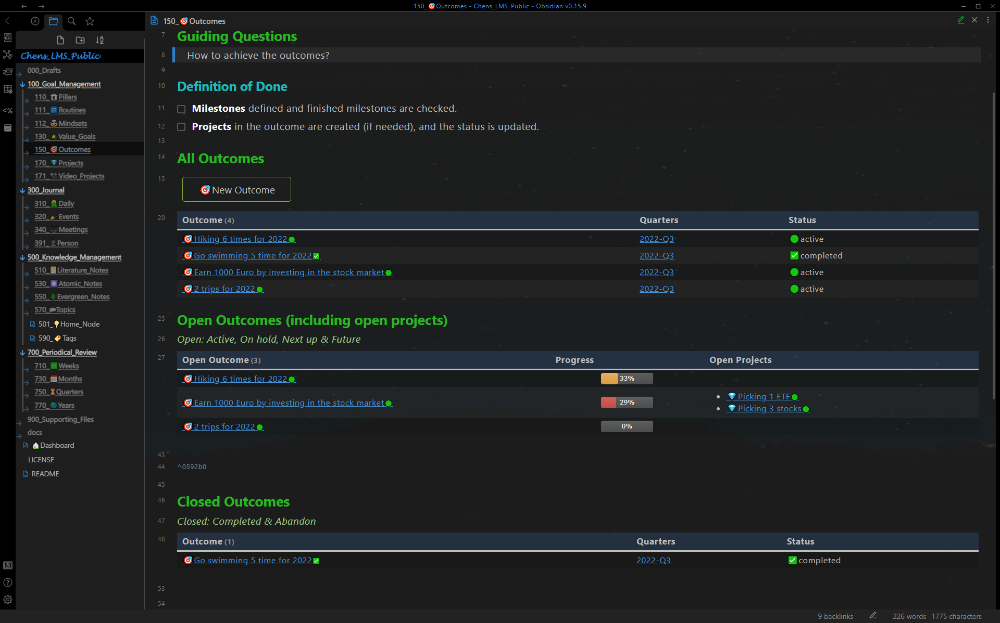

展示案例 - 目标管理
Show Case - Goal management
支柱
pillar
带有支柱笔记（右窗格）的目标管理仪表板（左窗格，固定）。 仪表板：所有活跃的支柱笔记都显示在此处的表格中。 支柱笔记：支柱的所有价值目标都显示在表格中。

价值目标
Value Goal
带有价值目标笔记（右窗格）的目标管理仪表板（左窗格，固定）。 仪表板：所有未完成的价值目标都显示在此处的表格中。 价值目标笔记：价值目标的所有结果都显示在表格中，价值目标的所有习惯和心态也显示在表格中。

结果
Outcome
带有结果笔记（右窗格）的目标管理仪表板（左窗格，固定）。 仪表板：所有未完成结果都显示在此处的表格中。 结果：结果笔记的所有项目都显示在一个表格中，每个项目都有一个进度条。

项目
Project
带有项目笔记（右窗格）的目标管理仪表板（左窗格，固定）。 仪表板：所有未完成项目都显示在此处的表格中。 项目：此处定义了任务。并自动计算完成的操作。

习惯
Routine
带有习惯笔记（右窗格）的目标管理仪表板（左窗格，固定）。 仪表板：所有活跃的习惯都显示在表格中。 习惯：习惯的目的、进度和反思都写在这里。

心态
Mindset
带有心态笔记（右窗格）的目标管理仪表板（左窗格，固定）。 仪表板：所有活跃的心态都显示在表格中。 心态：这里写了心态的目的、进步和反思。

单个笔记类型的仪表板
每种笔记类型提供了单独的仪表板，显示更多详细统计信息。
价值目标仪表板
共 3 个价值目标。它们都是未完成的的。

结果仪表板
一共4个结果。其中3个是未完成的，1个已完成。
